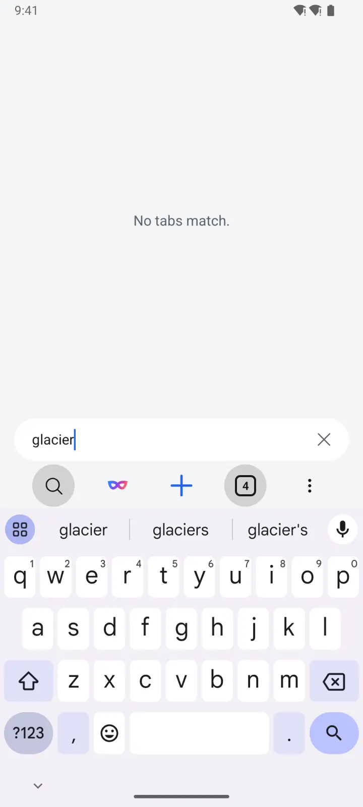
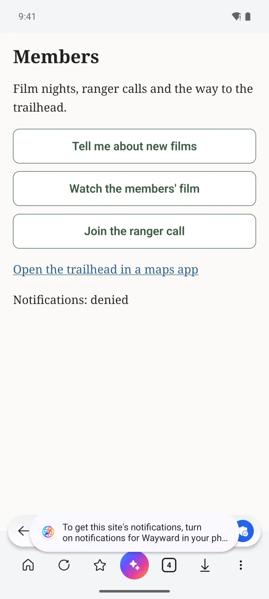

What Wayward's messages mean
How-to
Find the message you saw to learn what it means and what you can do next. Messages are grouped by where you meet them; use your browser's find, or the help's search, to look one up.
When a page won't open
Instead of the page, Wayward shows what went wrong, with the address under it. The bars stay, so you can go back or try another address.
- Site not found: "Check the address, or your connection." The name may be misspelled, or you may be offline.
- You're offline: "Check your connection and try again." Turn on Wi-Fi or mobile data.
- The site took too long to respond: the site is slow or down. Try again in a moment.
- The site refused the connection: the site may be down, or this network (at work or school, say) blocks it.
- Can't open this page, with two error numbers: something else went wrong. If it keeps happening on one site, send us feedback with the numbers.
- This site doesn't support a secure connection: HTTPS-only (on by default) only loads pages over secure connections, and this site doesn't have one. Open anyway (not secure) opens just that site, in that tab (HTTPS-only is back on once you leave it), but the network you're on could see or change what you send and receive there. Avoid typing passwords or card numbers on it.
- Connection isn't secure: the site's security certificate couldn't be checked, so Wayward didn't open it. The address bar shows a globe instead of a lock (TalkBack reads it as Not secure). Someone could be reading or changing what you send. Only use Open anyway (not secure) if you trust the connection, like your own home router's page.

More help: Fix a site that looks broken or won't work.
Empty screens
- No downloads yet: you haven't downloaded anything. Open a video and tap the tab above the address bar, share a link to Wayward, or hold a picture to download it.
- No tabs, No tabs match., No private tabs. Tap + to open one.: nothing to show on the Tabs screen, or nothing matches your search.
- No groups yet. Long-press a tab to add it to a group.: the Groups view before you've made one.
- No bookmarks yet. Open the menu on a page and tap Bookmark. and This folder is empty.: nothing saved there yet.
- No history yet. Pages you visit in tabs show up here; private tabs never add to it.: nothing visited yet, or it was cleared.
- History is off. Turn it on in Settings > Tabs and History to remember pages you visit in tabs that aren't private.: you turned off History.
- Sites you visit often show up here.: the start page before you've browsed much.
- No sites yet: in Site permissions, before any site has asked for notifications or protected video.
- Ad blocking is on: the start page's counter before anything was blocked this week.

While you browse
- Stopped more dialogs from this page.: the page kept popping up messages, so after three in a row Wayward stopped it.
- This image is part of the page and can't be saved on its own: when you hold a picture the page draws itself, there's no picture file to save, copy or share.
- Couldn't get the image, The site refused it (HTTP ...) with the site's error number, The site didn't send an image, The site sent an empty file, The site didn't answer, The file is too big (over ...) with the largest size allowed: copying, sharing or downloading a picture or a link's file didn't work, and why. Try again, or open the picture in a new tab first.
- The private tab closed before the image arrived: you closed the private tab while its picture was still coming.
- No app on your phone opens this link or No app on this phone can open that link: a link meant for an app, and you don't have that app.
- To get this site's notifications, turn on notifications for Wayward in your phone's settings.: you allowed the site, but Android has Wayward's notifications turned off. Turn them on in your phone's settings for Wayward.
- Blocked by uBlock Origin. Loading its settings… and Loading uBlock Origin's lists…: right after Wayward starts, the ad blocker takes a few seconds to get ready. Open the screen again in a moment.
- uBlock Origin: ... followed by a message: the ad blocker couldn't make a change you asked for. Try again.

The start page and the menu
- Added to the start page, That page is already on the start page: what happened when you added a shortcut.
- Start page full. Remove one, or choose more in Customize. or Start page full. Remove a shortcut first.: every tile is taken. Remove one, or pick more tiles in Settings > Customize > Shortcuts (up to 16).
- Already added, but hidden. Choose more in Customize. and Not added. Some are hidden: choose more in Customize.: you have more shortcuts than tiles. Choose more tiles in Customize.
- This phone's home screen doesn't take shortcuts and Already on your home screen: name and icon updated: see Find your way around the menu.
- This page couldn't be saved as a PDF, This page can't be printed right now and Android's print service isn't available here: see the same page.
Translating
- This phone can't run the translator.: translation needs something this phone doesn't have.
- The language files didn't download. Check your connection and try again.: each language downloads the first time; that download didn't finish.
- The translator doesn't have this language yet.: that language can't be translated yet.
- This page couldn't be translated.: something else went wrong; reload and try again.
Locks and spaces
- Set a screen lock on your phone first, Set a screen lock on your phone first to use this. or Needs a screen lock on your phone (Settings > Security).: Wayward's locks use your phone's own fingerprint, face or PIN, so they need a screen lock set in your phone's settings first.
- That's as many spaces as Wayward keeps. Delete one to make another.: you've reached the most spaces.
Bookmarks, settings files and pictures
- Your bookmarks couldn't be opened after a problem with this phone's key storage, so a new list was started.: your bookmarks are kept encrypted with a key held in your phone's secure key storage, and the phone lost that key. Without it the old list can't be read, so Wayward started a new one. If you saved your bookmarks to a file, import it again.
- Couldn't save the bookmark just now. Try again in a moment.: your phone's key storage didn't answer in time. Try again.
- Bookmark and settings files: see Bring your bookmarks and settings for No bookmarks found in that file., That file is too big to import., That isn't a Wayward settings file., Couldn't read or save the file. and the rest.
- Wallpaper: That picture can't be used. Try another one. or That picture is too big. Try a smaller one. Pick another photo.
Downloads
What a failed download's message means is in When a download fails, including Not saved: it's an app file. Tap its link to download it., and the message from sites the Google Play version of Wayward can't download from. While a download moves along, its row can also say:
- Preparing…, Checking… or Moving…: getting the file ready, or moving it, which takes a moment for big files and slow folders.
- Cancelled: you cancelled it.
- File missing: the file was deleted or moved outside Wayward, so only its row is left. Delete the row, or download it again.
- No app on your phone opens this file: you have no app for this kind of file. Install one that opens it, or share the file to an app that does.
Moving downloads:
- Moved to the folder, Moved 3 downloads to the folder, Moved into Wayward, behind the downloads lock: done.
- Moved 2 of 3; the rest couldn't be written there: the folder ran out of space, or wouldn't take some files. Free some space or pick another folder.
- Already moving, Couldn't move it, Couldn't use that folder: try again, or pick another folder.
- This phone has no folder picker: your phone has no app for picking folders, so downloads stay inside Wayward.
- Removed from the list. The file is still in your folder.: you removed a download kept in your phone's folder from the list; the file itself is still there.
Premium
Connecting to Google Play. Try again in a moment., Google Play isn't offering Premium to this account right now., Purchase pending… and Checking with Google Play…: see Unlock Premium, or get it back.
The AI assistant
Before it can answer:
- The AI assistant is part of Wayward Premium.: see Premium.
- Turn on the AI assistant in Settings > AI assistant first., Pick an AI provider in Settings > AI assistant first., Add your OpenRouter key in Settings > AI assistant first.: finish setting it up in Settings > AI assistant.
- This tab is locked. Unlock it first., This chat is locked. Unlock it first.: unlock it with your fingerprint, face or PIN first.
- The preview was closed.: the link preview it was reading closed.
When a button does nothing:
- Another app is drawing over Wayward. Close it and tap again.: another app has a window over part of Wayward, like a screen-dimming or blue light filter app, a chat bubble or a floating button. So that another app can't tap them for you, these buttons don't take a tap while it's there: the assistant's Allow, Share, Start task, Download and Send, the confirmation for Always allow, and a site's Allow for the camera, microphone, notifications or protected video. Close that app's window, bubble or filter, then tap again. TalkBack and a keyboard still work as usual.
From your AI provider, in the chat:
- OpenRouter rejected the key. Reconnect it in Settings > AI assistant. or Anthropic rejected the key. Check it in Settings > AI assistant.: the key is wrong, or was revoked. Add it again.
- Your OpenAI account is out of credits.: add credit with your provider.
- Too many requests, or your xAI account reached a limit. Try again in a moment, or check your account.: wait a little, or check your provider account's limits.
- OpenRouter is busy right now. Try again in a moment.: the provider is overloaded.
- AI request failed: ... with the provider's own words: something else went wrong at the provider.
- The AI provider or model changed, so this message starts a new conversation.: you switched provider or model, so the assistant starts fresh.
- Your last chat is too big to open right now. It stays on your phone until you tap New chat, and nothing new is kept until then.: start a new chat to go on.
Setting up the key:
- OpenRouter connected, Key saved: done; your key is stored encrypted on your phone.
- Couldn't connect: ...: the OpenRouter sign-in didn't finish. Try again.
Saving chats and tasks:
- Chat saved. The copy isn't encrypted., Chat saved and encrypted. To read it, use Open saved chat in the assistant's menu., Encrypting the chat…: what happened when you saved the chat to a file.
- 1 chat saved and encrypted, There's no kept chat to save.: what happened when you tapped Save chat in Settings > Backup. With no kept chat, there's nothing to save yet.
- Use at least 12 characters., The passwords don't match.: the password for an encrypted chat needs 12 or more characters, typed the same twice.
- That password doesn't open this file, or the file is damaged., This isn't an encrypted Wayward chat., This chat was saved by a newer Wayward. Update Wayward to open it., This file is too big to open right now.: opening a saved chat didn't work, and why.
- This chat used a locked tab or locked Downloads, so it can't be saved to a file.: to keep what was locked private, that chat stays in Wayward.
- Saved. It's in the assistant's panel and in Settings > AI assistant., Give it a name and something to ask., Too long to save. Keep it under 2000 characters., You have 50 saved tasks, the most Wayward keeps. Delete one first., That saved task was deleted, Saved tasks can't be read right now. Try again after restarting Wayward.: what happened with a saved task.
For more, see Set up the assistant with your own key, Save, open or delete a chat and Receipts and saved tasks.
Phone settings Wayward opens for you
- Look for Passwords or Autofill in your phone's settings, Look for Default apps in your phone's settings: your phone doesn't have the page Wayward tried to open, so it opened your phone's main settings instead. Find the setting there.
- Couldn't open your phone's settings: open your phone's Settings app yourself.
Quick confirmations
Short messages that say something worked: Copied, Image copied, Download started, Version copied, Browsing data cleared, Everything deleted, Translation files deleted, Settings saved, Settings restored, and Icon changed. Your home screen may take a moment to update.